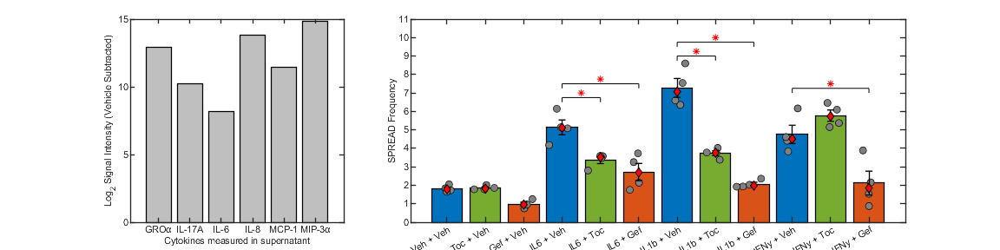

Contents
- Figure 5: Investigating the mechanism of cytokine induced spreads in HBE1 cells
- Figure 5A - Bar plot of cytokine array
- Figure 5B - Inhibition of Cytokine Induced SPREADS by Gef (EGFRi) and Toc (anti-IL6R)
- Now plot Figure 5 A & B to be appended with pSTAT3 stains
- Save the Figure
- Figure 5 - C, D, E & F - pSTAT3 IF Stains
- Figure Legend
Figure 5: Investigating the mechanism of cytokine induced spreads in HBE1 cells
% add paths addpath('Z:\Code\Image Analysis\','Z:\Code\Cell Trace\','Z:\Code\Nick\')
Figure 5A - Bar plot of cytokine array
% Load the data from devans microarray MAdata = load('Z:\imageData\SPREADs\Cytokine_Secretion_Data\HBE 20220603\MLdata\MicroArrayData.mat'); cytoTable = array2table(MAdata.A','VariableNames',MAdata.MemCond_rows','RowNames',string(MAdata.CytOrd_cols)'); cytoTable=cytoTable(cytoTable.Row ~= "IL-1β",:); cytoTable=cytoTable(cytoTable.Row ~= "Negative Control",:); % pull the vehicle and il1b treated cells highDiff = (cytoTable.Veh_IL1b_367./cytoTable.Veh_Veh_365) >= 1.5; % get logical of cytokines >= 1.5 fold over vehicle
Figure 5B - Inhibition of Cytokine Induced SPREADS by Gef (EGFRi) and Toc (anti-IL6R)
% load a representative experimental replicate's SPREAD data dataloc = load('Z:\Processed Data\SPREADs\2022-11-10 HBE1 EKAREN4 Cyto Inhibs\2022-11-10 HBE1 EKAREN4 Cyto Inhibs_Processed.mat'); dataloc = dataloc.dataloc; % pull out dataloc % Get the SPREAD data from it! data1 = convertSPREADToDataframe2(dataloc, 'EKAR', 'aftertx',2,'exclude',{'EGF'},'tmaxaftertx',24); % pull the single cytokine data no10 = ~contains(data1.txinfo,'10ng/mL'); % only need the 20ng/mL data data2 = data1(no10,:); % now give the treatments prettier names oldTxNames = {'1 fim 1 vehicle 1 vehicle', '1 fim 10ug/mL Tocilizumab 1 vehicle', '1 fim 1uM Gefitinib 1 vehicle',... '1 fim 1 vehicle 20ng/mL IL6', '1 fim 10ug/mL Tocilizumab 20ng/mL IL6', '1 fim 1uM Gefitinib 20ng/mL IL6',... '1 fim 1 vehicle 20ng/mL IL1b', '1 fim 10ug/mL Tocilizumab 20ng/mL IL1b', '1 fim 1uM Gefitinib 20ng/mL IL1b',... '1 fim 1 vehicle 20ng/mL IFNy', '1 fim 10ug/mL Tocilizumab 20ng/mL IFNy', '1 fim 1uM Gefitinib 20ng/mL IFNy',... }; txNames = {'Veh + Veh','Toc + Veh','Gef + Veh',... 'IL6 + Veh','IL6 + Toc','IL6 + Gef',... 'IL1b + Veh','IL1b + Toc','IL1b + Gef',... 'IFNy + Veh','IFNy + Toc','IFNy + Gef',... }; data2.exptx = categorical(data2.txinfo,oldTxNames,txNames); % get the statistics for plotting freqData = grpstats(data2,"exptx",["mean","median","sem"],"DataVars","freq") % do the initial anova for the data [~,~,stats] = anova1(data2.freq,data2.exptx,'off'); % See which are significantly different versus control (vehicle) [resultsC,~,~,gnamesC] = multcompare(stats,"CriticalValueType","dunnett",'ControlGroup',find(contains(stats.gnames,'Veh + Veh')),'Display','off'); resultsTblC = array2table(resultsC,"VariableNames", ["Group","Control Group","Lower Limit","Difference","Upper Limit","P-value"]); resultsTblC.("Group") = gnamesC(resultsTblC.("Group")); resultsTblC.("Control Group") = gnamesC(resultsTblC.("Control Group")) % See if IL6 + toc or gef are significantly different from IL6 + veh [results6,~,~,gnames6] = multcompare(stats,"CriticalValueType","dunnett",'ControlGroup',find(contains(stats.gnames,'IL6 + Veh')),'Display','off'); resultsTbl6 = array2table(results6,"VariableNames", ["Group","Control Group","Lower Limit","Difference","Upper Limit","P-value"]); resultsTbl6.("Group") = gnames6(resultsTbl6.("Group")); resultsTbl6.("Control Group") = gnames6(resultsTbl6.("Control Group")) % See if IL1b + toc or gef are significantly different from IL1b + veh [results1b,~,~,gnames1b] = multcompare(stats,"CriticalValueType","dunnett",'ControlGroup',find(contains(stats.gnames,'IL1b + Veh')),'Display','off'); resultsTbl1b = array2table(results1b,"VariableNames", ["Group","Control Group","Lower Limit","Difference","Upper Limit","P-value"]); resultsTbl1b.("Group") = gnames1b(resultsTbl1b.("Group")); resultsTbl1b.("Control Group") = gnames1b(resultsTbl1b.("Control Group")) % See if IFNy + toc or gef are significantly different from IFNy + veh [resultsIFNy,~,~,gnamesIFNy] = multcompare(stats,"CriticalValueType","dunnett",'ControlGroup',find(contains(stats.gnames,'IFNy + Veh')),'Display','off'); resultsTblIFNy = array2table(resultsIFNy,"VariableNames", ["Group","Control Group","Lower Limit","Difference","Upper Limit","P-value"]); resultsTblIFNy.("Group") = gnamesIFNy(resultsTblIFNy.("Group")); resultsTblIFNy.("Control Group") = gnamesIFNy(resultsTblIFNy.("Control Group"))
freqData =
12×5 table
exptx GroupCount mean_freq median_freq sem_freq
__________ __________ _________ ___________ ________
Veh + Veh Veh + Veh 4 1.8178 1.7865 0.087244
Toc + Veh Toc + Veh 4 1.8587 1.8202 0.05448
Gef + Veh Gef + Veh 4 0.97993 0.95826 0.10301
IL6 + Veh IL6 + Veh 4 5.138 5.114 0.40145
IL6 + Toc IL6 + Toc 4 3.3611 3.5249 0.18836
IL6 + Gef IL6 + Gef 4 2.7183 2.6966 0.46322
IL1b + Veh IL1b + Veh 4 7.2737 7.069 0.51077
IL1b + Toc IL1b + Toc 4 3.7343 3.7656 0.13301
IL1b + Gef IL1b + Gef 4 2.0634 1.9839 0.10157
IFNy + Veh IFNy + Veh 4 4.7552 4.512 0.49774
IFNy + Toc IFNy + Toc 4 5.7713 5.7351 0.30603
IFNy + Gef IFNy + Gef 4 2.1164 1.8491 0.64673
resultsTblC =
11×6 table
Group Control Group Lower Limit Difference Upper Limit P-value
______________ _____________ ___________ __________ ___________ __________
{'Toc + Veh' } {'Veh + Veh'} -1.3949 0.040931 1.4767 1
{'Gef + Veh' } {'Veh + Veh'} -2.2737 -0.83788 0.59792 0.49759
{'IL6 + Veh' } {'Veh + Veh'} 1.8844 3.3202 4.756 1.4268e-06
{'IL6 + Toc' } {'Veh + Veh'} 0.10754 1.5433 2.9791 0.029769
{'IL6 + Gef' } {'Veh + Veh'} -0.53532 0.90048 2.3363 0.41456
{'IL1b + Veh'} {'Veh + Veh'} 4.02 5.4558 6.8916 1.6209e-14
{'IL1b + Toc'} {'Veh + Veh'} 0.48073 1.9165 3.3523 0.0041655
{'IL1b + Gef'} {'Veh + Veh'} -1.1902 0.24559 1.6814 0.99968
{'IFNy + Veh'} {'Veh + Veh'} 1.5016 2.9374 4.3732 7.7978e-06
{'IFNy + Toc'} {'Veh + Veh'} 2.5176 3.9534 5.3892 8.9526e-08
{'IFNy + Gef'} {'Veh + Veh'} -1.1372 0.29855 1.7344 0.9982
resultsTbl6 =
11×6 table
Group Control Group Lower Limit Difference Upper Limit P-value
______________ _____________ ___________ __________ ___________ __________
{'Veh + Veh' } {'IL6 + Veh'} -4.7558 -3.3202 -1.8846 5.4193e-07
{'Toc + Veh' } {'IL6 + Veh'} -4.7149 -3.2793 -1.8437 3.2557e-06
{'Gef + Veh' } {'IL6 + Veh'} -5.5937 -4.1581 -2.7225 8.6395e-10
{'IL6 + Toc' } {'IL6 + Veh'} -3.2125 -1.7769 -0.34129 0.0089063
{'IL6 + Gef' } {'IL6 + Veh'} -3.8553 -2.4197 -0.98415 0.00024991
{'IL1b + Veh'} {'IL6 + Veh'} 0.70004 2.1356 3.5712 0.0011449
{'IL1b + Toc'} {'IL6 + Veh'} -2.8393 -1.4037 0.031901 0.058073
{'IL1b + Gef'} {'IL6 + Veh'} -4.5102 -3.0746 -1.639 8.193e-06
{'IFNy + Veh'} {'IL6 + Veh'} -1.8184 -0.38282 1.0528 0.98747
{'IFNy + Toc'} {'IL6 + Veh'} -0.80236 0.63322 2.0688 0.78957
{'IFNy + Gef'} {'IL6 + Veh'} -4.4573 -3.0217 -1.5861 3.7228e-06
resultsTbl1b =
11×6 table
Group Control Group Lower Limit Difference Upper Limit P-value
______________ ______________ ___________ __________ ___________ __________
{'Veh + Veh' } {'IL1b + Veh'} -6.8915 -5.4558 -4.0202 4.3077e-14
{'Toc + Veh' } {'IL1b + Veh'} -6.8506 -5.4149 -3.9792 6.6391e-14
{'Gef + Veh' } {'IL1b + Veh'} -7.7294 -6.2937 -4.858 0
{'IL6 + Veh' } {'IL1b + Veh'} -3.5713 -2.1356 -0.69995 0.0011563
{'IL6 + Toc' } {'IL1b + Veh'} -5.3482 -3.9125 -2.4768 4.3568e-09
{'IL6 + Gef' } {'IL1b + Veh'} -5.991 -4.5554 -3.1197 2.9122e-11
{'IL1b + Toc'} {'IL1b + Veh'} -4.975 -3.5393 -2.1036 5.2674e-08
{'IL1b + Gef'} {'IL1b + Veh'} -6.6459 -5.2103 -3.7746 2.9166e-13
{'IFNy + Veh'} {'IL1b + Veh'} -3.9541 -2.5185 -1.0828 0.00010331
{'IFNy + Toc'} {'IL1b + Veh'} -2.9381 -1.5024 -0.066728 0.036325
{'IFNy + Gef'} {'IL1b + Veh'} -6.593 -5.1573 -3.7216 7.1952e-12
resultsTblIFNy =
11×6 table
Group Control Group Lower Limit Difference Upper Limit P-value
______________ ______________ ___________ __________ ___________ __________
{'Veh + Veh' } {'IFNy + Veh'} -4.373 -2.9374 -1.5018 6.478e-06
{'Toc + Veh' } {'IFNy + Veh'} -4.3321 -2.8965 -1.4608 2.5353e-05
{'Gef + Veh' } {'IFNy + Veh'} -5.2109 -3.7753 -2.3396 2.5039e-08
{'IL6 + Veh' } {'IFNy + Veh'} -1.0528 0.38282 1.8185 0.98748
{'IL6 + Toc' } {'IFNy + Veh'} -2.8297 -1.3941 0.041574 0.060729
{'IL6 + Gef' } {'IFNy + Veh'} -3.4725 -2.0369 -0.60128 0.0020659
{'IL1b + Veh'} {'IFNy + Veh'} 1.0828 2.5185 3.9541 0.00010409
{'IL1b + Toc'} {'IFNy + Veh'} -2.4565 -1.0209 0.41477 0.27923
{'IL1b + Gef'} {'IFNy + Veh'} -4.1274 -2.6918 -1.2562 2.4861e-05
{'IFNy + Toc'} {'IFNy + Veh'} -0.41958 1.016 2.4517 0.28394
{'IFNy + Gef'} {'IFNy + Veh'} -4.0745 -2.6388 -1.2032 7.0506e-05
Now plot Figure 5 A & B to be appended with pSTAT3 stains
% make a figure fig5 = figure; % plot the cytokines that have increase in secretion by greater than 1.5 fold over vehicle subplot(1,3,1) bar(categorical(cytoTable.Row(highDiff)),log2(cytoTable.Veh_IL1b_367(highDiff)-cytoTable.Veh_Veh_365(highDiff)),'FaceColor',[0.75,0.75,0.75],'EdgeColor','k', 'LineWidth',1); barAx = gca; % label the axes and give it a title ylabel('Log_2 Signal Intensity (Vehicle Subtracted)'); xlabel('Cytokines measured in supernatant'); % title('Cytokines with greater than 1.5x fold increased secretion after IL1b treatment'); % fix the ticks set(barAx,'TickLength',[0.02, 0.025],'LineWidth',1); ylim([0,15]) % Plot the spread frequency by treatment with vehicle, Tocilizumab, or Gefitinib co-treatment subplot(1,3,2:3) sprdBar = bar(freqData.exptx,freqData.mean_freq, 'FaceColor','flat', 'EdgeColor','k', 'LineWidth',1); % plot the mean % plot the significance comparisons ylim([0,11]); % set the y limit hold on; swarmchart(data2.exptx,data2.freq,'XJitter','randn','YJitter','none','MarkerEdgeColor','k','MarkerFaceColor',[0.5,0.5,0.5]) % plot the raw replicate data errorbar(freqData.exptx,freqData.mean_freq,freqData.sem_freq,'.','vertical','Color','k','LineWidth', 1,'MarkerSize', 1); % plot SEM plot(freqData.exptx,freqData.median_freq,'d','MarkerFaceColor','r','MarkerEdgeColor','k') % ,'% plot median % plot significance lines % IL-6 + veh vs IL-6 + toc or IL-6 + gef a = 6.75; b = 7.5; % height of lines plot(4:5, [a,a], '-k',4.5, a + 0.25, '*r'); plot([4,4],[a-0.25,a],'-k'); plot([5,5],[a-0.25,a],'-k') % IL-6 + Veh vs IL-6 + Toc plot(4:6, [b,b,b], '-k',5, b + 0.25, '*r'); plot([4,4],[b-0.25,b],'-k'); plot([6,6],[b-0.25,b],'-k') % IL-6 + Veh vs IL-6 + gef % IL-1B + veh vs IL-1B + toc or IL-1B + gef a = 9; b = 9.75; % height of lines plot(7:8, [a,a], '-k',7.5, a + 0.25, '*r'); plot([7,7],[a-0.25,a],'-k'); plot([8,8],[a-0.25,a],'-k') % IL-1b + Veh vs IL-1b + Toc plot(7:9, [b,b,b], '-k',8, b + 0.25, '*r'); plot([7,7],[b-0.25,b],'-k'); plot([9,9],[b-0.25,b],'-k') % IL-1b + Veh vs IL-1b + gef % IFNy + veh vs IFNy + gef b = 7.25; % height of lines plot(10:12, [b,b,b], '-k',11, b + 0.25, '*r'); plot([10,10],[b-0.25,b],'-k'); plot([12,12],[b-0.25,b],'-k') % ifn+ Veh vs ifn + gef % add axis labels and fix the ticks ylabel('SPREAD Frequency'); xlabel('Treatment') set(gca,'TickLength',[0.01, 0.025],'LineWidth',1); % turn off the hold hold off; % standardize the figure fig5.Units = "inches"; fig5.Renderer = 'painters'; fontname(fig5,"Arial"); fontsize(fig5,8,"points"); fig5.Position = [0.5,0.5,12,3]; % make the bars in B the right colors sprdBar.CData(1:3:12,:) = repmat([0, 0.4470, 0.7410],[4,1]); sprdBar.CData(2:3:12,:) = repmat([0.4660, 0.6740, 0.1880],[4,1]); sprdBar.CData(3:3:12,:) = repmat([0.8500, 0.3250, 0.0980],[4,1]);
Save the Figure
saveas(fig5,'Z:\imageData\SPREADs\Plotting_Code\Figure_Outputs\F5_HBE1_SPREADs_Mechanism.fig') saveas(fig5,'Z:\imageData\SPREADs\Plotting_Code\Figure_Outputs\F5_HBE1_SPREADs_Mechanism.svg') % open in affinity assuming DPI is 96.
Figure 5 - C, D, E & F - pSTAT3 IF Stains
All pSTAT3 stains that were done at the end of experiments are here: Z:\imageData\SPREADs\pSTAT3_Stains
% All images in the figure comes from: 2022-11-10 HBE1 EKAREN4 Cyto Inhibs experiment % Vehicle example = xy % IL6 example = xy % IL1b example = xy 24 % F is just E 4x'd and cropped to the squares
Figure Legend
Figure 5. Investigating the mechanism of cytokine-mediated SPREADs. (A) Vehicle-subtracted Log2 mean intensity of secreted cytokines in the supernatant of IL-1β treated HBE1 cells versus control. (B) SPREAD frequency of HBE1 cells co-treated with vehicle or pro-inflammatory conditions (indicated by labels under bars) plus vehicle, 10 ug/mL tocilizumab, or 1uM gefitinib (indicated by bar color). (C-E) pSTAT3 immunofluorescence (IF) stains of HBE1 cells after 24-hours treatment with vehicle, 20 ng/mL IL-6, or 20 ng/mL IL-1β. The nuclear marker is shown in blue with pSTAT3 shown in red. All image intensities are scaled similarly per channel. White boxes outline regions of high pSTAT3 activity in IL-1β treated cells. Representative images selected from 9 technical replicates across 3 independent experiments. Scale bars in panels C-E are 250 μm. (F) Enlarged images of clusters of pSTAT3 activation, identified in panel E by two white boxes. For panel F, the whole image in panel E was scaled 4x then cropped.